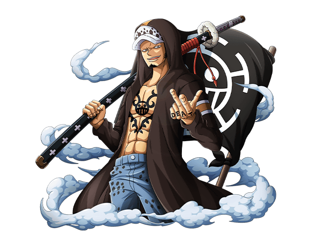

-
Luffy
Power 2850

Resume:
Luffy sets sail from the East Blue Sea to the Grand Line in search of the legendary treasure, One Piece, to succeed Gol D. Roger as "King of the Pirates".
-
Law
Power 2400
Descrição
He is one of the central allies of the Straw Hat Pirates during the Dressrosa, Whole Cake Island, and Wano Country Sagas.
-
Zoro
Power 2700

Descrição
Is the combatant of the Straw Hat Pirates, and one of their two swordsmen. Formerly a bounty hunter, he is the second member of Luffy's crew and the first to join it.